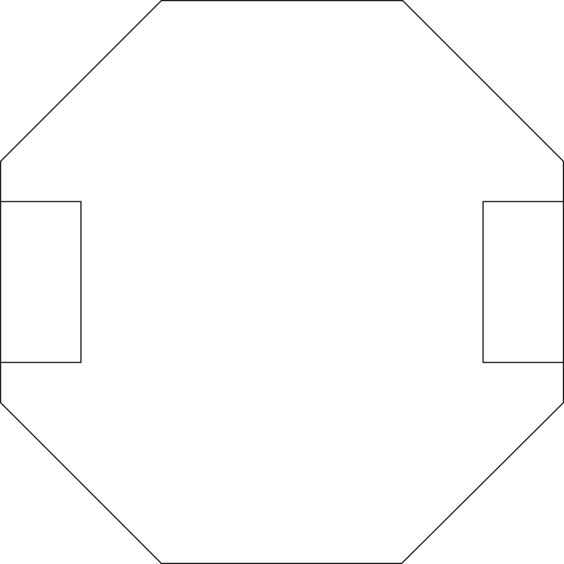

1. Plataforma universal¶
En este apartado se muestra cómo construir la plataforma universal para poder montar posteriormente los distintos robots sobre ella.
{kind=link}

Plataforma universal para montar los robots Cucabot.¶
Primero descargaremos el plano PDF de la plataforma universal:
Plano de construcción de la plataforma universal. Formato PDF.Plano de construcción de la plataforma universal. Formato editable SVG.Después imprimiremos el plano con una escala del 100% del tamaño original. Las líneas de los extremos izquierdo y derecho coinciden con la hoja DIN A4, por lo que no se verán impresas en la hoja de papel.
A continuación utilizaremos la impresión como plantilla para cortar una tabla de madera con la forma octogonal de la plataforma universal, recortando también los rectángulos que alojarán las ruedas del robot.
Terminada de cortar la plataforma de madera, podemos añadir los dos motores con reductora y ruedas a la plataforma universal.
Una vez añadidos los motores se debe añadir una rueda loca para que sirva de apoyo en la parte frontal de la plataforma.
{kind=link}
Créditos¶
Instrucciones de la página original de Cucabot en archive.org